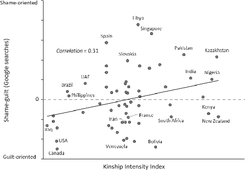

FIGURE B.1.Relationship between the importance of tradition and the (A) Kinship Intensity Index (96 countries) and (B) prevalence of cousin marriage (56 countries). Tradition is a country average based on responses to this question: How similar are you to the person described by this statement: “Tradition is important to her/him. She/he tries to follow the customs handed down by her/his religion or her/his family” (1–7 scale). Cousin marriage is plotted on a logarithmic scale.

FIGURE B.2.Relationship between the frequency of searches for “shame” vs.“guilt” on Google and the Kinship Intensity Index (KII). The dashed line representsthe zero line; countries above the line search more often for “shame” than “guilt.” Those below the dashed line search for “guilt” more than “shame.” The plot statistically removes the variation among the nine languages used, allowing us tofocus on comparing the 56 countries. Note that Enke didn’t use cousin marriage inhis analyses. This is a partial regression plot created using the data on shame and guilt from Enke (2017, 2019).